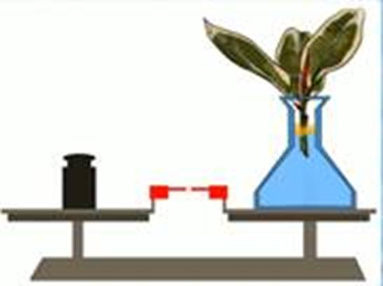
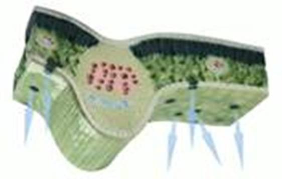
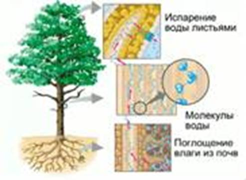
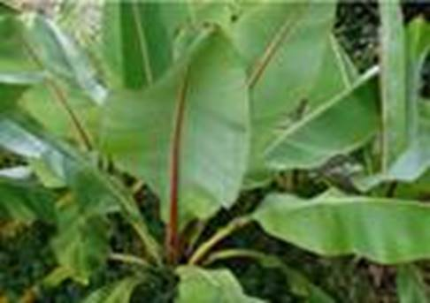
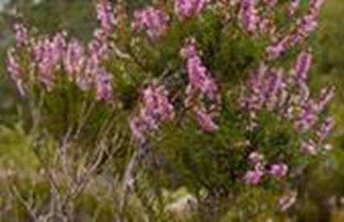

Питательные и минеральные вещества перемещаются по органам растений исключительно в виде водных растворов. Вода – необходимый компонент для фотосинтеза. Но большинство воды растение теряет путем испарения через листья.
Транспирация – процесс испарения воды листьями.
Опыт: взять горшок с растением. Одну из его веток, не отрезая, поместить в стеклянную колбу. Закрыть горлышко колбы ватой. Через некоторое время стенки колбы будут покрыты мельчайшими капельками воды.
Испарение воды можно оценить количественно.
Опыт: срезать ветку растения с крупными листьями и поставить ее в бутылку с водой. На поверхность воды налить растительного масла, что не даст ей испаряться через горлышко. Поставить бутылку на чашу весов. Уравновесить чаши гирями (см. Рис. 1). Уже через сутки воды станет меньше, и чаша весов с бутылкой поднимется вверх. Снова уравновесив чаши весов, можно выяснить, сколько воды испарила ветка растения.

Рис. 1. Уравновешенные чаши весов
Внутри листа вода по межклетникам проходит к устьицам, и главным образом, испаряется через них (см. Рис. 2). Остальная поверхность листа защищена от испарения воскоподобным слоем кутикулы. Особенно много воды испаряют молодые листья.

Рис. 2. Срез листа; стрелками указано испарение воды
В зависимости от температуры и влажности воздуха, растения могут открывать или закрывать устьица. При неблагоприятных условиях устьица закрыты, а при благоприятных открываются снова.
Частичное испарение воды может происходить через кутикулу листков и чечевичку коры, но оно происходит в 10-20 раз медленнее, чем через устьица.
Растения разных видов испаряют разное количество воды, которое зависит от их строения и размеров. Так, за сутки растение кукурузы испаряет до 0,8 л воды, растение капусты – до литра, березы – до 60 л.
В пасмурную погоду испарение менее интенсивно, чем в жаркий солнечный день.
Наибольшее количество воды испаряется при сильном сухом ветре.
Испарение воды листьями способствует передвижению воды в теле растения (см. Рис. 3).

Рис. 3. Передвижение воды в теле растения
Вместе с корневым давлением, испарение воды создает ту силу, которая поднимает воду из корней растения в листья. Вместе с водой поднимаются минеральные вещества.
Испарение воды охлаждает листья растений, располагающиеся на ярком солнечном свету.
Чем крупнее листья растений (чем большую площадь поверхности они имеют), тем больше влаги они испаряют. Поэтому растения влажных мест обитания имеют крупные листья (японский банан (см. Рис. 4)). А у растений сухих мест обитаний листья меньше (тамарикс).

Рис. 4. Японский банан
Также испарение воды регулируется открыванием и закрыванием устьиц.
Зимой растения умеренных широт не могут корнями впитывать холодную или замерзшую воду. Поэтому, если бы они сохраняли листья, то это привело бы к высыханию. Таким образом, осенью листья растений умеренных широт обычно опадают. Это явление называют листопад.
Листопадные растения – растения, которые хотя бы недолго пребывают в состоянии без листьев.
Вечнозеленые растения – растения, листья которых сохраняются всю зиму (ель, сосна, вереск обыкновенный (см. Рис. 5), клюква, брусника).

Рис. 5. Вереск обыкновенный
Их листья малы и испаряют мало влаги. Листья вечнозеленых кустарничков защищены от испарения слоем снега. Под снегом зимуют вечнозеленые травы (гравилат, земляника, чистотел). Каждый лист таких растений живет несколько лет, затем опадает.
Листопад связан со старением листьев, в результате которого постепенно уменьшается интенсивность фотосинтеза и дыхания. К осени в листьях растений накапливаются ненужные и вредные вещества. И вместе с опавшими листьями эти вредные вещества удаляются из тела растения.
В процессе старения листка у двудольного растения около его основания формируется слой отделения. При этом проводящие элементы закупориваются, и раневая поверхность превращается в листовой рубец. У однодольных и травянистых двудольных растений шар отделения не образуется, а листья отмирают и разрушаются постепенно, вместе со стеблем.
Лабораторная работа
Приготовьте спиртовые вытяжки из зеленых и желтых листьев растения. Налейте их в чашки Петри. В каждую чашку опустите кончик длинной полоски фильтровальной бумаги. Через некоторое время на бумаге появятся полосы, соответствующие растительным пигментам. Посмотрите на количество полос и их окраску. Назовите пигменты зеленых и желтых листьев.
Прокипятите красные листья растений (свеклы, клена, краснокочанной капусты). Полученные растворы разлейте по разным банкам. В одну из банок по каплям прибавляйте слабый раствор уксусной кислоты. Следите за изменением окраски раствора. В другую банку по каплям добавляйте раствор слабой щелочи (питьевая сода). Наблюдайте за изменением окраски раствора. Изменение окраски происходит по причине содержания в красных листьях пигмента антоциана.
Осенью листья желтеют по причине разрушения хлорофилла, что делает заметными желтые и оранжевые пигменты.
Лабораторная работа
Поставить в воду, окрашенную красными чернилами, молодой побег какого-либо дерева. Через несколько суток выньте побег из воды и смойте с него чернила. Отрежьте кусочек нижней части побега. Рассмотрите его поперечный и продольный срезы. Объясните причину появления полосок красного цвета.
Знаете ли вы, что…
Леса, состоящие из деревьев различных видов, испаряют различное количество воды. За одно лето гектар елового леса испаряет 2240 тонн воды, букового – 2070 тонн, соснового – 470 тонн.
Береза высотой около 15 м каждый год сбрасывает около 250 000 листьев, общей массой около 35 кг.
Листья вечнозеленых растений живут от 2 до 7 лет.
Список литературы
1. Биология. Бактерии, грибы, растения. 6 кл.: учеб. для общеобразоват. учреждений / В.В. Пасечник. – 14-е изд., стереотип. – М.: Дрофа, 2011. – 304 с.: ил.
2. Тихонова Е.Т., Романова Н.И. Биология, 6. – М.: Русское слово.
3. Исаева Т.А., Романова Н.И. Биология, 6. – М.: Русское слово.
Дополнительные рекомендованные ссылки на ресурсы сети Интернет
1. Biologiya-uroki.ru (Источник).
2. Fizrast.ru (Источник).
3. Bsu.ru (Источник).
Домашнее задание
1. Биология. Бактерии, грибы, растения. 6 кл.: учеб. для общеобразоват. учреждений / В.В. Пасечник. – 14-е изд., стереотип. – М.: Дрофа, 2011. – 304 с.: ил. – с. 175, задания и вопрос 1, 5 (Источник).
2. Почему осенью изменяется цвет листьев растений?
3. Какое значение в жизни растений имеет транспирация?
4. * Листья клена желтеют уже в начале осени, березы – чуть позже. Практически до самых холодов стоят листья сирени. Когда желтеют и опадают листья растений, растущих в вашем дворе? Подумайте, с чем это может быть связано?